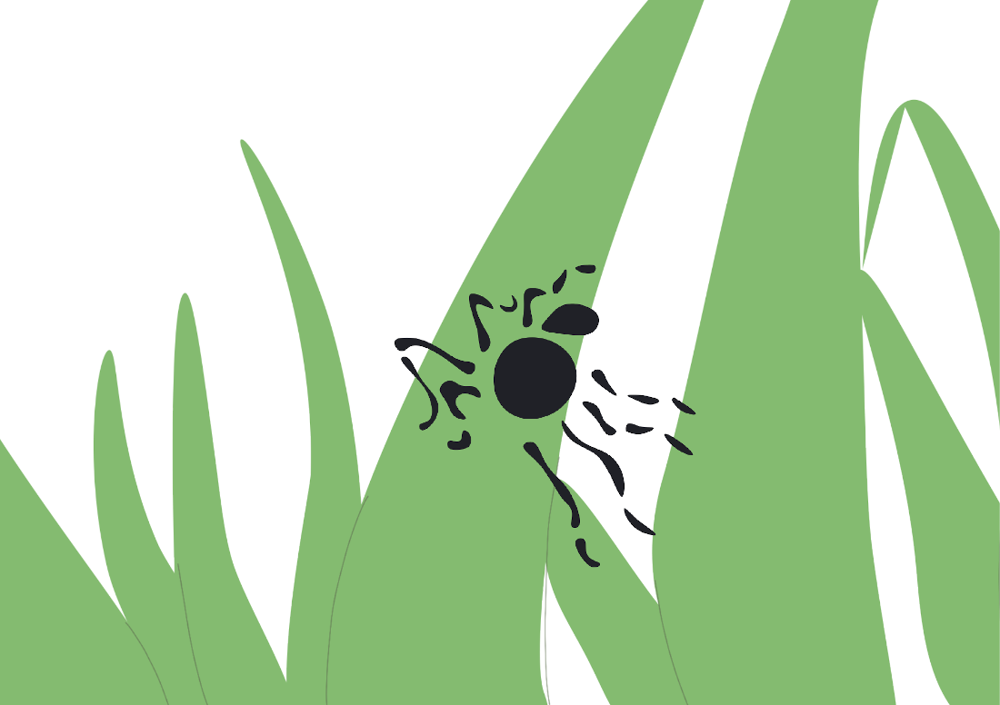

Co jeśli te wszystkie żyjątka, te wszystkie partykuły, które nas otaczają, co jeśli one są takie jak my? Co one mogą sobie o nas myśleć? Czy one nas widzą? Wiedzą, że istniejemy razem w pobliżu siebie?